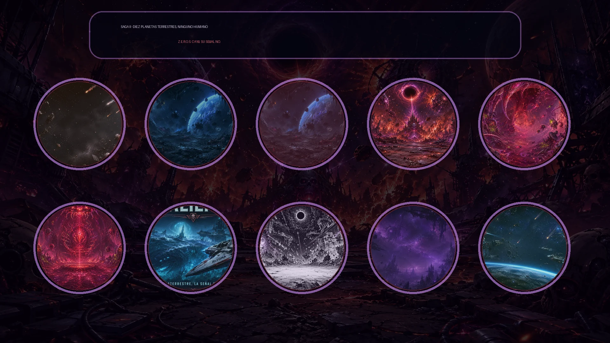
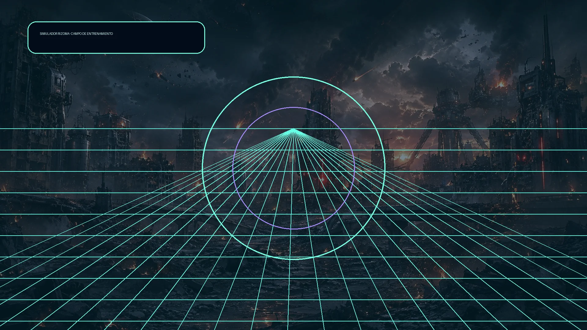

Centro de mando
Escribe tu nombre para entrar.
Preparación de misión
Hangar táctico Rizoma
Compara cascos, resonancias, Guardianes y presets. Todo cambio de nave se aplica de forma segura en la próxima salida.Nave preparada
Línea propia
Naves Rizoma
Guardianes conquistados
Flota de Conquista
Apoyo temporal
Guardián invocable
Usuarios locales
Perfiles
Identidad jugable
Elige avatar
Meta-progresión
Tienda de mejoras
Fragmentos: 0Tablero local
Ranking multinivel
Premios animados
Logros
Memoria de progreso
Colección
Telemetría local
Maestría del arsenal
Preferencia de construcción
Doctrinas tácticas
La doctrina solo puede influir en una de las tres cápsulas de una subida de nivel y únicamente en el 65% de las ofertas. Recompensas de mundo, botín de Guardianes, hordas, Entrenamiento y tienda no cambian.
Cartografía de construcción
Rutas de sinergia
La cartografía es informativa. Resume poderes y fusiones ya registrados; no modifica probabilidades, daño, duración ni recompensas.
Bitácora local
Memoria de expediciones
Se guardan localmente las últimas 18 expediciones finalizadas. Fijar una referencia solo habilita comparaciones visuales; no altera doctrina, cápsulas, daño, rareza ni recompensas.
Códice táctico
Arsenal descubierto
Sinergias
Fusiones evolutivas
Intervenciones
Críticos y combos críticos
Memoria de campaña
Archivo de mundos
Todo mundo superado queda disponible para repetición. Tu progreso principal no se modifica.Formas DOMINIO
Naves Rizoma · Línea propia
Seis cascos originales desbloqueados por hitos M1/M4/M8/M12/M16/M20. Cada uno conserva una habilidad propia y no se mezcla con DOMINIO.Flota de Conquista
Diez naves conquistadas inspiradas en Guardianes. Seleccionar una reemplaza temporalmente el casco Rizoma en la siguiente salida, sin borrar tu nave propia elegida.Invocación de Guardianes
Todo Guardián derrotado puede seleccionarse como apoyo temporal de emergencia.Niveles disponibles

SAGA II · RUTA ACTIVA
0/10 mundos de Saga II superados
Desierto · abismo pelágico · magma · estrella moribunda · gusano colosal · cerebros · tundra · biblioteca anime · grises · necroescama.
Simulador Rizoma
Modo entrenamiento
Elige un Guardián ya derrotado. Practica, recoge premios y vuelve a tu campaña sin modificarla.